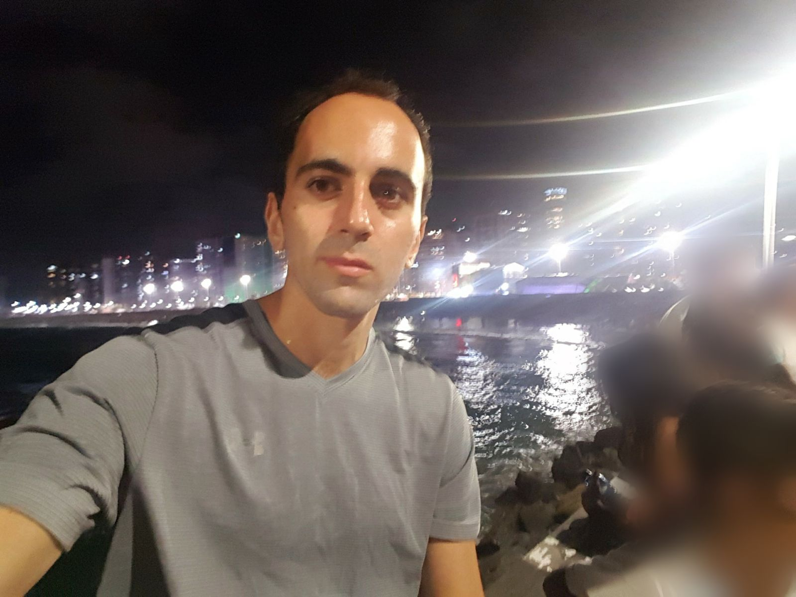
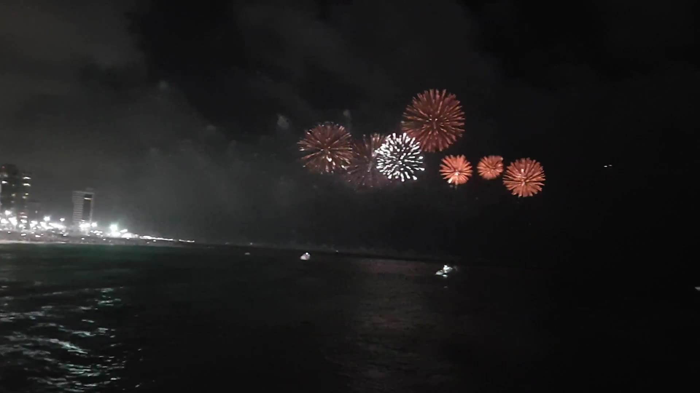
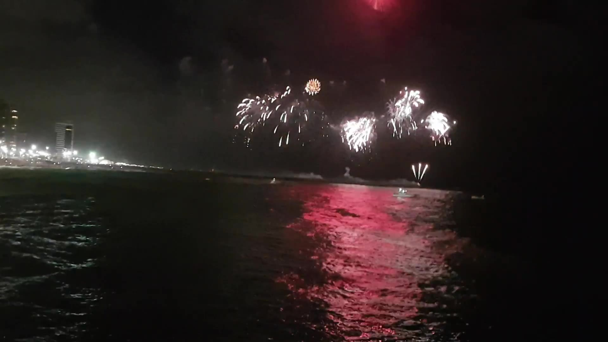
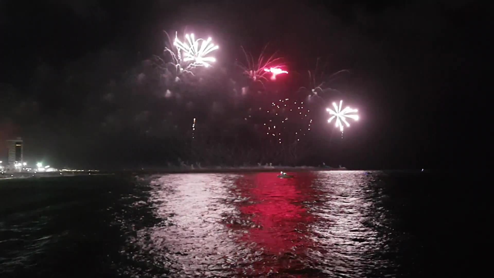
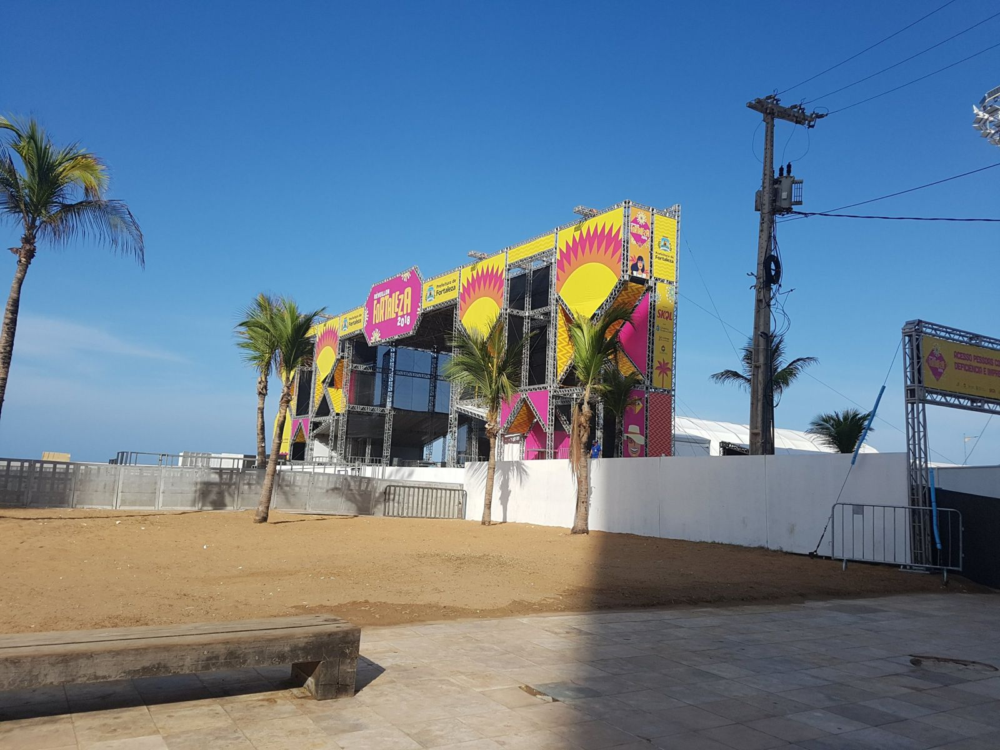
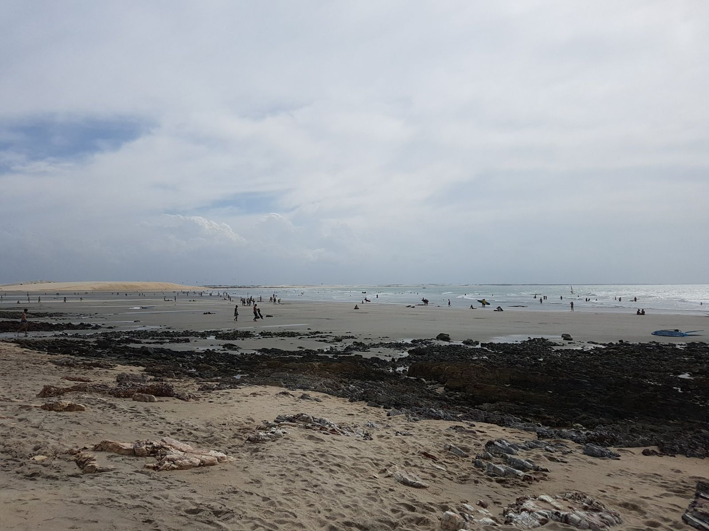
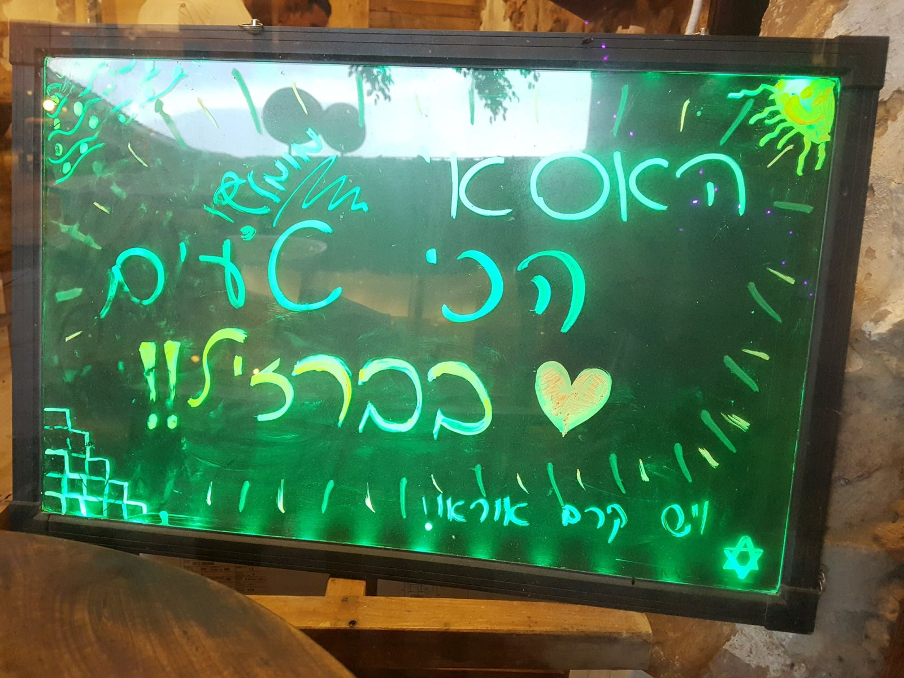

South America · Brazil · Fortaleza and Jericoacoara
Fortaleza and Jericoacoara, December 2017 to January 2018
This chapter starts where the Manaus chapter ends. I flew from Manaus to Fortaleza, on the coast in the north-east of Brazil, spent New Year's Eve there, and a few days later went with an agency to Jericoacoara. My photos from these days are few, so this chapter is shorter than the others, and I say plainly where I have nothing.
My conclusion up front: what I have of Fortaleza is one night, New Year's Eve. I was alone, I watched the fireworks of the New Year of 2018 from a breakwater by the sea, and the two videos below are the main thing I have from there. About Jericoacoara I only have one day of photos. I do not remember what the flight and the transfer cost, so the prices come from sources I read in November 2026, each with its date.
About the times: the file names of my photos show my phone's clock, which stayed on Colombian time (GMT-5). Google Photos shows the local time in Fortaleza (GMT-3), two hours later, and I use that one. You can see it in the photo from January 2 below: the file name says 13:29 and Google Photos says 15:29. The boxes hold research I did in November 2026, each with a source and a date, so you can tell it apart from what I remember.
The way to Manaus and the days there are in the Brazil chapter on Leticia, Tabatinga and Manaus.
- Flights from Manaus: Gol and LATAM fly nonstop, about 15 flights a week, the fastest 3 hours 25 minutes. I cannot quote fares, and New Year's week costs more.
- Fortaleza to Jericoacoara: one guide gives a bus at about 24 to 26 US dollars and a shared shuttle at about 55 to 66 dollars. A second guide gives a bus from about 80 reais. The two disagree on the bus time (5.5 to 6 hours against 7 to 8), so ask the operator. In December and January buses and shuttles can sell out.
- The last stretch: Jericoacoara is in a protected area, so you change to a 4x4 in Jijoca.
- Réveillon: the main New Year celebration has been at the Aterro da Praia de Iracema, in 2018 and again for 2026. The city publishes access rules each December.
The sources and the details are in the boxes below the story. These things change, so check before you go.
Manaus to Fortaleza
I flew from Manaus airport to Fortaleza. I do not remember the airline or what I paid. I do not remember the date either: I think it was December 31, but it could have been December 30. My last photos in Manaus are dated December 30, and the first ones in Fortaleza are from the night of December 31, so December 31 fits, but I cannot prove it. I probably took an Uber to the airport, as I recommend in the Manaus chapter.
What I found: a route page on flightconnections.com, last updated on November 21, 2026, lists Gol and LATAM as airlines that fly Manaus to Fortaleza nonstop, about 15 flights a week, with a fastest flight of 3 hours 25 minutes (flightconnections.com).
What I did not find: fares that I can quote. They change by the day and the season, and a fare search page is not a source I can date. I also do not know which airline I flew in 2017 or whether the flight was nonstop. Check a fare search for your own dates, and expect New Year's week to cost more.
The hostel in Fortaleza
I slept in a hostel in Fortaleza. I do not remember its name, the neighbourhood it was in, or what a night cost. I think I stayed four nights, December 31 and January 1, 2 and 3, because I left for Jericoacoara on January 4, but I did not write the dates down.
December 31: New Year's Eve at the sea wall
I spent New Year's Eve alone. I did not go with people from the hostel. I watched from a breakwater of rocks, with a crowd of people along the sea wall and on the rocks around me. Google Photos places the selfie below at Praia do Meireles, a beach in the middle of the city, at 22:55. Behind me you can see the lights of the beachfront buildings and, a little to the right, a lit structure that may be the stage. I blurred the faces of the people next to me.

At 22:27 I filmed the sea and the beachfront from the rocks. The video is 38 seconds long and I show the first 20, with the sound removed. The dark mass along the sea wall is people.
The long video starts at 23:59 and lasts six minutes. I cut 40 seconds from it, starting 1:20 in, about twenty seconds after midnight, and I removed the sound. The fireworks were launched from the water, in front of the coast, from what looks like a platform, with small boats near it. The sky was low and cloudy, so the smoke stayed over the show and every burst lit it from inside, in red, orange, white and blue. The three stills below come from the same video.



What I found: a report by Portal IN, dated January 1, 2018, places the New Year's celebration of 2018 at the Aterro da Praia de Iracema, and lists Luan Santana, Wesley Safadão, Xand Avião, Simone e Simaria and the DJ Alok among 15 attractions. It says about 1.3 million people attended (portalin.com.br). An article by O Povo from December 30, 2025 says the main celebration of the 2026 New Year was again concentrated at the Aterro da Praia de Iracema, and describes the crowd arriving from about 7 pm (opovo.com.br).
What I did not find: where exactly I stood compared to the stage and the launch point, and any official safety or access rules for next year. Those change every year, and the city publishes them in December. I also did not find who played on the stage I saw.
January 2: the stage by day
On January 2 I photographed a large stage that says Réveillon Fortaleza 2018 and Prefeitura de Fortaleza, the city hall. The coverage above says the 2018 celebration was at the Aterro da Praia de Iracema, so I assume that is where I took the photo, but I did not write the place down. The stage was still standing, with fences and sand around it, and almost no one was near it. This is the only photo I have from January 1 to 3.

January 4: to Jericoacoara
I went from Fortaleza to Jericoacoara with an agency, in a minibus. I think it was on January 4, 2018, because my first photos from Jericoacoara are from January 5 and I have none from the 3rd or the 4th. I do not remember the name of the agency, the price, or how long the ride took.
What I found: a guide published on February 3, 2023 and last updated on October 3, 2026 lists four ways. A bus takes 5.5 to 6 hours and costs about 24 to 26 US dollars (operators named: Expresso Guanabara and Sim7). A shared shuttle, which is a minivan like the one I took, takes 5 to 5.5 hours and costs about 55 to 66 dollars (Nettour and Taguatur). A private transfer costs about 261 to 324 dollars. A rental car takes about 4.5 hours. It says that Jericoacoara is in a protected area, so you leave the car in Jijoca and take a 4x4 for the last stretch, and that in December and January the buses and shuttles can sell out (universal-traveller.com). A second guide, published on June 10, 2026, says the Guanabara bus leaves three times a day from Beira Mar in Fortaleza, takes 7 to 8 hours and starts at about 80 reais, with a change to a 4x4 in Jijoca that is included in the ticket. It gives shared 4x4 transfers from about 200 to 250 reais per person and private transfers for up to four people at about 750 to 800 reais (blog.blablacar.com.br).
What I did not find: prices for 2018, and an official timetable. The two guides disagree on the duration of the bus, 5.5 to 6 hours against 7 to 8, so ask the operator. The prices come from two websites, not from the bus companies, and I did not check them.
January 5: Jericoacoara
On January 5 I photographed the beach at low tide. At 14:34 the sea had gone out and left a wide flat of dark rock and wet sand, with a big pale dune at the far end of the bay. People were swimming and some carried boards. I did not write down the name of the beach.

At 17:40 I photographed a glowing board in a place I do not remember the name of. It is written in Hebrew with a marker on a green illuminated board, with a sun and a heart: "the chillest in Brazil!!". The board suggests that the place expected Israeli visitors. I did not catch the line below it well enough to translate, so I do not.

I have no more photos from Jericoacoara. I do not know how long I stayed or where I slept, and I do not know when and how I got from there to Rio de Janeiro. My next dated pictures are from January 10, and they are from Rio.
What I do not remember
I do not remember the airline, the price or the exact date of the flight from Manaus (December 30 or 31), or how I got to the airport (probably an Uber). I do not remember the name or area of the hostel in Fortaleza, how much it cost, or how many nights I slept there (I think four). I do not know where exactly I stood on New Year's Eve beyond what Google Photos shows, and I did not note the launch point of the fireworks or what I ate that night. I do not remember what I did on January 1 and 3. I do not remember the agency that ran the minibus to Jericoacoara, the price, how long the ride took, the date (I think January 4), where I slept there, or how long I stayed. I do not remember the name of the beach in the photo, or where the Hebrew board hung.